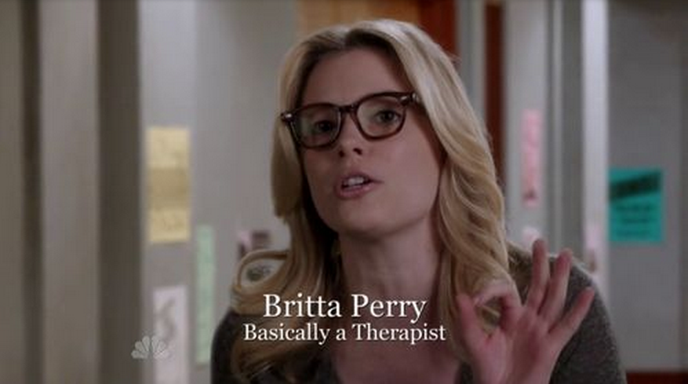

| Who is she? |
Look at this picture |
|---|
Of all the Community characters, Britta Perry changed the most from her introduction. In the pilot she had no quirks and simply framed the eccentric characters around her for the audience. While this wasn’t boring, it wasn’t nearly as interesting as the new Britta that quickly came after. With her activism and need to prove that she is “woke,” the show can explore many new plotlines and scenarios. Her decision to major in psychology also increases her importance to the show. In addition to adding new gags, she makes characters like Jeff more relatable by exploring his relationship with his father and doing what she can to help him repair it.
|
 |